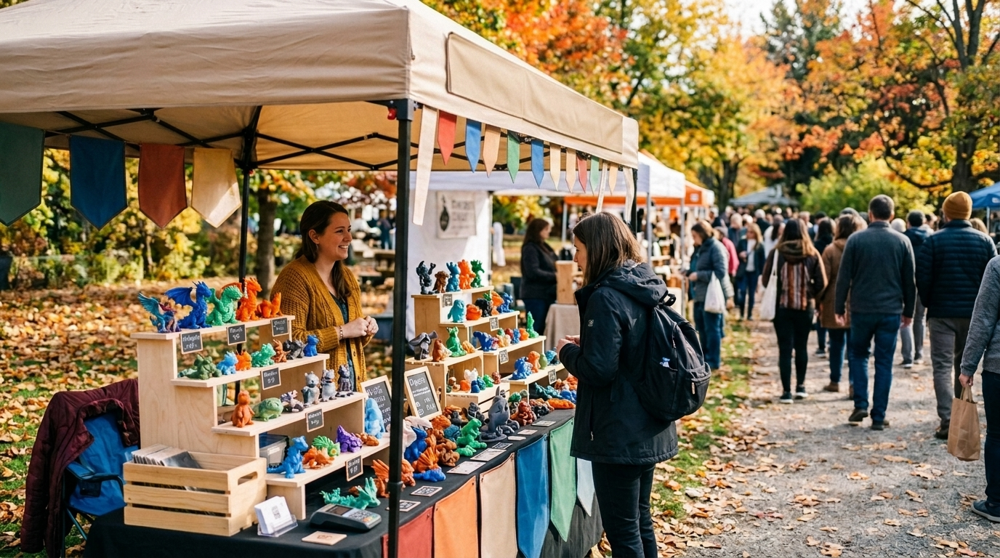
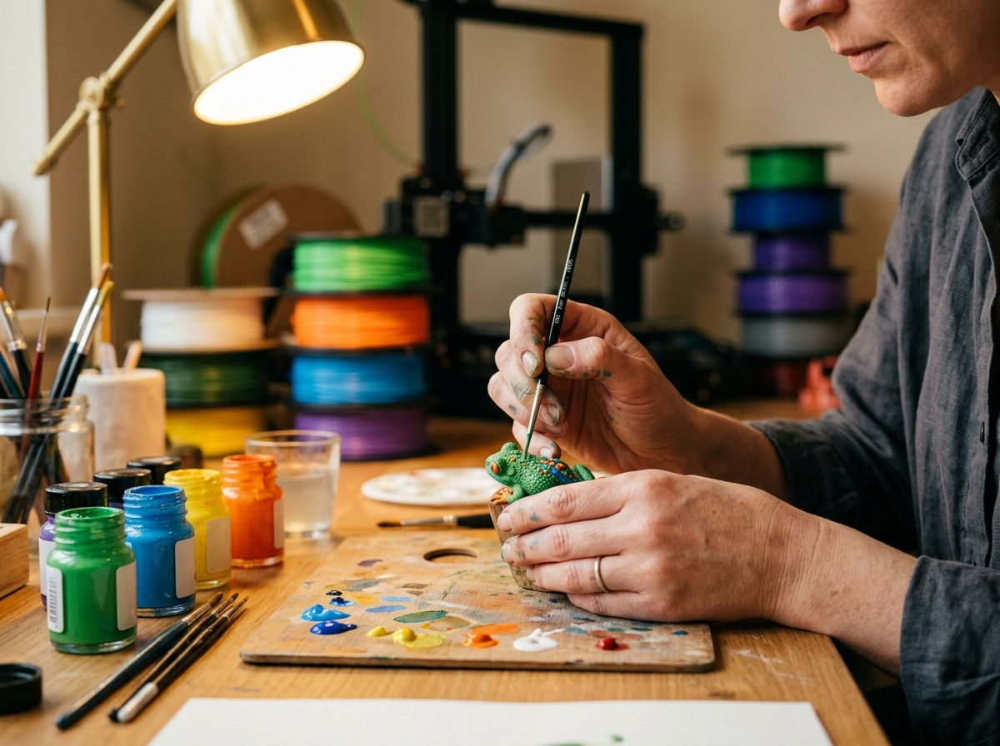

Meet us at a market table, message the Facebook page, or order ahead and pick up in North Marion.
On the market trail
Dobbs Designs vends at markets and festivals around Grant County. Here are the kinds of stops it's made — each season's schedule posts on Facebook.
Converse, IN — a fall-market favorite on North Jefferson Street.
Marion's own park festival — right in the home town.
Gas City's big artisan market at the Soaporium on Main Street.
Ordering
Ordering works the way small shops should: send a message, get a real answer from the maker.
